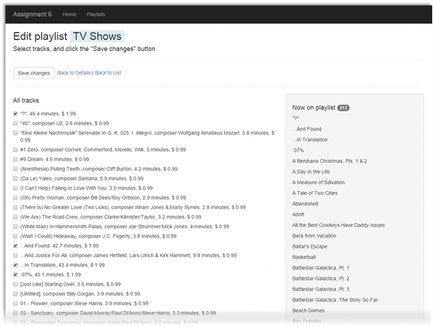
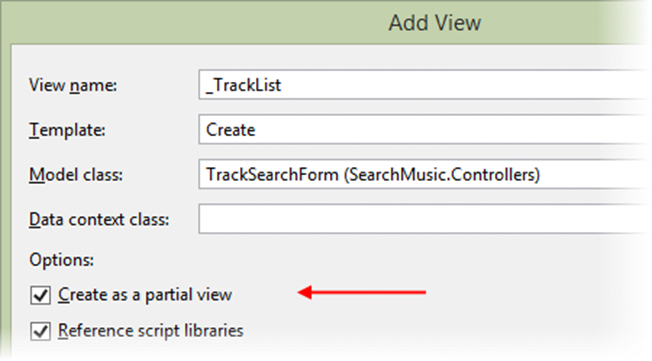

INT422 – Lecture 11
Using JavaScript and Ajax in ASP.NET MVC web apps. Introduction to web services.
Test today
Test 10 is today, in the middle of the timeslot, and will run approximately 18 minutes.
We will begin the class/session with coverage of recent and new topics, before we do the test.
Code examples
Playlist Filtering
Photo Upload With Preview
Search Music
Review (and reinforce) media handling topic coverage
The lecture notes of week 10 part 2 introduced students to the idea of a dedicated media item class, for web apps that make extensive use of non-text media items.
We will review the topic highlights, and reinforce some design and coding techniques and practices.
Theme for this week
Modern web apps use JavaScript, Ajax, and web services to improve the user experience. This week, we will introduce coverage of these topics, and discuss some typical use cases.
Using JavaScript in ASP.NET MVC web apps
JavaScript is the web’s programming language. Historically know as a client (user agent) browser programming language, the introduction of Node.js (by Ryan Dahl) in 2009 began a trend to server-based web apps and services that are written in JavaScript. Many – including your teacher team – believe that JavaScript will soon dominate web app and service development, supplanting ASP.NET MVC, PHP, Java, and other platforms.
Links to more information:
· Node.js web site
· Wikipedia article on Node.js
Do we have and use JavaScript in our existing ASP.NET MVC web apps? Yes. Built-in. JavaScript is used to help with browser-based HTML Forms validation, among other tasks.
From our perspective as ASP.NET MVC web app programmers, we will want to use JavaScript in the browser to improve the browser user’s experience and interaction, and to modify the DOM.
To get a feel for the kind of use cases that would benefit from a little JavaScript, we’ll study two code examples:
Both are browser-only solutions. So, in general, if there is a task or feature that can be implemented only in the browser, with no interaction or communication needed beyond the browser, then we can consider adding some JavaScript.
JavaScript – data filtering in the browser
You will recall the main task in Assignment 6, playlist editing.

The left side of the page shows a list of a couple thousand tracks. Way too many to be useful for playlist editing.
Back in the Assignment 6 timeframe, we could have asked you to fix this problem, server-side, by adding the ability to filter the list of tracks somehow. But that would have derailed the opportunity to learn a really nice client-side solution.
So, what we’ll do, is show the view, but with NO tracks on the list. It will also have a new feature, a checkbox group of genres. Click the image to open it full-size in a new tab/window.
Then, when a genre checkbox is checked/selected, the list of tracks in that genre appear. Click the image to open it full-size in a new tab/window.
General approach to using JavaScript in a web app
In Solution Explorer, in the Scripts folder, create an App folder. (This is a soft but emerging best practice for ASP.NET MVC web apps.) In that folder, we add our own JavaScript code. In this code example, “core.js” was added.
The core.js source code file will hold JavaScript functions that will be called from the browser.
How does it get loaded on the page? With an HTML <script> element. (Duh, it’s HTML.)
Where do we write the HTML <script> element? Well, that depends:
If the functions in the JavaScript source code file can be used by ALL (or most) views in the app, then add it to the shared _Layout.cshtml template. Where? Near the bottom, following the statement that renders the “jquery” bundle.
Alternatively, if the functions in the JavaScript source code file will be used by only one (or few) view, then add it to the view(s) that needs it, at the bottom of the view file, at the end of the scripts section block of code.
Note: If the view does not currently have a scripts section, add it:
1. @section Scripts {
2. // The next statement may or may not be present
3. @Scripts.Render("~/bundles/jqueryval")
4. // Add this reference
5. < script src="~/Scripts/App/core.js" > < /script>
6. }
The important idea is that the JavaScript code is delivered to the browser, along with the desired HTML.
Next, design your HTML markup so that it can be modified by JavaScript. This means that it will need values for the id and/or class attributes. Then, add event handlers to elements that will call into the JavaScript function(s).
To summarize:
Specific tasks done in the data filtering app
Open and study the PlaylistFiltering code example as you read this section.
The original web app displayed a list of tracks, without any genre information. In this web app, we need that data.
In addition, we will need more data than a SelectList (or MultiSelectList) object can provide. (One of those provides an item’s value, text, and selected state. We need more – the genre information.)
Therefore, another view model class was created, TrackWithGenre:
1. public class TrackWithGenre: TrackBase
2. {
3. public int GenreId { get; set; }
4. public bool Selected { get; set; }
5. }
As a result of this, we need to edit the PlaylistEditTracksForm view model class. Replace its MultiSelectList object with a collection of TrackWithGenre objects.
Also, while we’re here, add a collection of GenreBase objects. We’ll need those too in the UI.
The controller GET method will get edited, to prepare the track list and genre list properties. These tasks imply that a new Manager class method is needed to deliver the track-with-genre collection.
As noted above, we want the initial load/view to have an empty list of tracks. The thought process is that each track – rendered in a div container – would be displayed or not, based on the browser interaction.
Therefore, we needed an multi item-selection list to hold the genres. The important code is the event handler.
1. <div class = "row" >
2. @foreach(var item in Model.GenreList)
3. {
4. <div class = "checkbox col-md-3">
5. <label> <input type="checkbox" name="Genres" value="@item.GenreId" onchange="toggleGenre('g' + '@item.GenreId', this.checked);" />
6. @item.Name </label>
7. </div>
8. } </div>
Rendering the tracks is next. The thought process is that each track needs to be identified with its genre. Therefore, make sure the div container includes the genre id – here formatted as the letter “g” with the genre identifier as a suffix.
1. @foreach(var item in Model.TrackList)
2. {
3. <div class="checkbox g@(item.GenreId)" style="display: none;">
4. <label> <input type="checkbox" name="TrackIds" value="@item.TrackId" checked="@item.Selected" />
5. @item.NameFull </label>
6. < /div>
7. }
Returning to the JavaScript toggleGenre() function, you can see that it is simple. It selects all nodes in the DOM that match the genre (e.g. “div.g14”), and displays them, or not.
An important concept is that the <input> elements are still in the DOM, whether they’re displayed or not. Therefore, the browser user’s item selections will be retained, and posted to the server when the HTML Form is submitted.
JavaScript – image preview
Last week, you learned something about non-text media item handling. The PhotoProperty code example gently introduced the topic, by enabling you to create Vehicle objects that included a photo.
You will remember how that processed worked, from the perspective of the browser user: The HTML Form’s text-and-number fields were filled with data, and then the browser user clicked a “Choose” button, to open and enable a standard file-selection dialog. Upon selection, the dialog was dismissed, and the name of the selected photo appeared next to the “Choose” button.
Wouldn’t it be nice to show an image thumbnail of the selected photo?
Yes.
Open and study the PhotoWithPreview code example as you read this section.
Design and coding tasks
The key to making this feature work is to add a div container element to the view, probably located just below the file-input HTML element. (When the page loads, the element will be empty.) Then, we add an event handler to the file-input element, which calls a JavaScript function. That function renders an img element inside the div.
Let’s get this done now.
Add a div container: As noted above, in the vehicle-create view, add a div container, located just below the file-input element. It needs a unique identifier.
Edit the file-input element: Add an onchange event handler, with the name of the JavaScript function that you’ll write next. It passes one argument, event. The event object holds all the info about the file-input onchange event.
Write the JavaScript: In Scripts > App, add a source code file to hold JavaScript functions. Make sure that you reference it where it’s needed (in the vehicle-create view). Its job is simply to render an img element, based on the file (photo) that the browser user selected. File (photo) info is found in the event object.
1. function previewImage(event) {
2. // Get a reference to the image element
3. var div = document.querySelector("#photoPreview");
4. // Add an img element
5. div.innerHTML = '<p><img src="' + URL.createObjectURL(event.target.files[0])
6. + '" alt="" width="300"></p>'
7. };
OK, what else can we do?
Above, we learned that if there is a task or feature that can be implemented only in the browser, with no interaction or communication is needed beyond the browser, then we can consider using some JavaScript.
What can we do if we need more or new data from the network, but we don’t want to GET or POST and fully refresh the view?
We can use Ajax. We’ll study two scenarios and code examples:
Learning more about Ajax
In the past, you probably learned that Ajax is a web client programming technique that enables JavaScript code to asynchronously request new content for the document that’s in the browser.
To refresh your memory, here are some introductory documents that will help you get started with Ajax:
Wikipedia – Ajax (programming)
MDN – AJAX info start page
MDN – Getting Started (with AJAX)
Ajax – A New Approach… (the article that popularized the Ajax technique)
Ajax – search use case
As noted above, JavaScript code can request new content. (While beyond the scope of this course, you should be aware that the code can also send content to a web app.)
The new content can be used in the DOM.
What kind of content? Most often, the new content is one of these types:
In a web app, how does the request get serviced? Well, the request is made to a specific resource URL. The controller action/method that services that URL composes and returns the response.
When returning HTML, we often use a pattern where we return a partial view. This source code container is similar to the familiar view, but it is not attached to the _Layout.cshtml template, and its intention is to be used as a component within an existing markup container.
❝A partial view contains only the markup and code expressions that are needed for a very small area of the page.
For example, assume a scenario where a standard view has defined an HTML <div> element. We can separately define a partial view, which renders an HTML table, with rows that render items in a data set. Then, using Ajax, some browser-based JavaScript code can request the partial view, and add it to div in the DOM.
Assembling the solution
Open and study the SearchMusic code example as you read this section.
We need many of the same moving parts that you saw in the JavaScript-only code examples, above:
The JavaScript code does the asynchronous request to a resource URL. The code example uses a pure JavaScript approach, to leverage your introductory level of experience with JavaScript. The use of jQuery (as well as unobtrusive JavaScript) is beyond the scope of this course.
To this, we add one or more actions/methods to a controller. An action/method will be a “listener” for a specific resource URL. A GET method will have one or more parameters for incoming data. For more complex interactions, we should use a POST method, and a package of data thats defined by a view model class. (This treatment is beyond the scope of this course.)
1. [Route("music/tracks/{searchText}")]
2. public ActionResult Tracks(string searchText = "")
3. {
4. // Fetch matching objects
5. var c = m.TrackGetAllByText(searchText);
6.
7. if (c == null)
8. {
9. // Empty list
10. return PartialView("_TrackList", new List<TrackBase> ());
11. }
12. else
13. {
14. return PartialView("_TrackList", c);
15. }
16. }
The controller action/method will call a Manager class method, which returns a collection of zero or more tracks that match the text search condition.
The action/method will return a partial view result. We create a partial view in a way that’s similar to a standard view. A convention and best practice is to use an underscore ( _ ) as the first character in the name of the partial view source code file. (Ah, so that’s why _Layout.cshtml and _Login.cshtml are named that way!)

Study the _TrackList.cshtml partial view source code. It is created with the List template and accepts an IEnumerable of TrackBase, and renders an HTML table. The intention is that it will be added to the DOM on the “search” view/page.
~~~~~
In the next class/session, we’ll look at cascading dropdown lists, and get an introduction to web services.